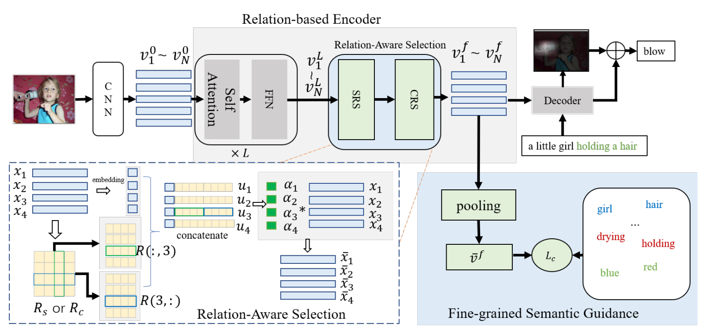
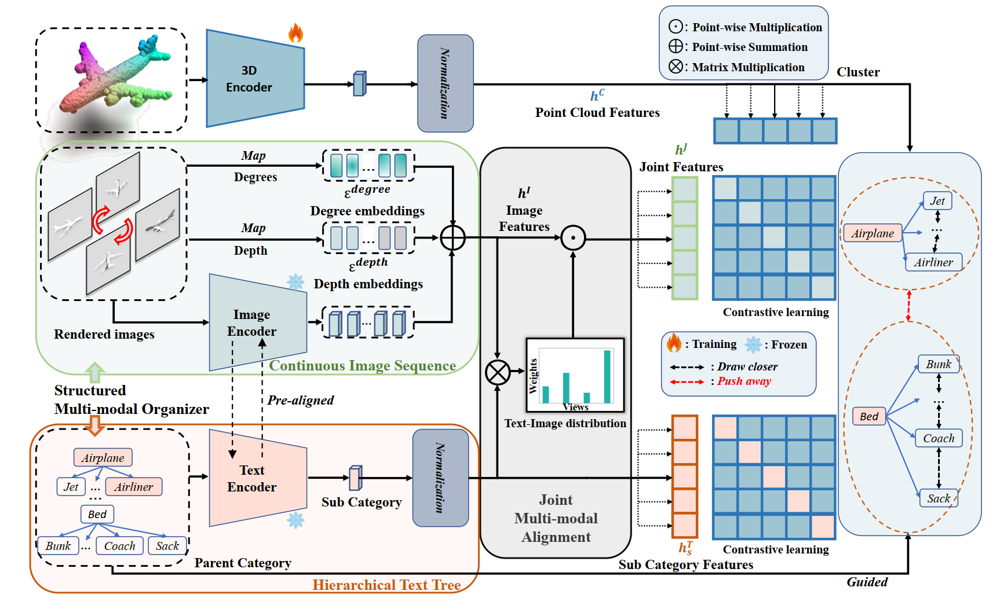
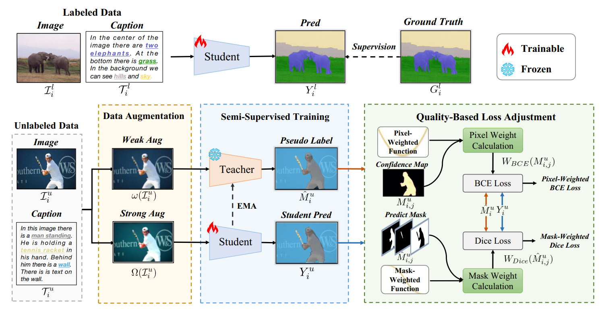
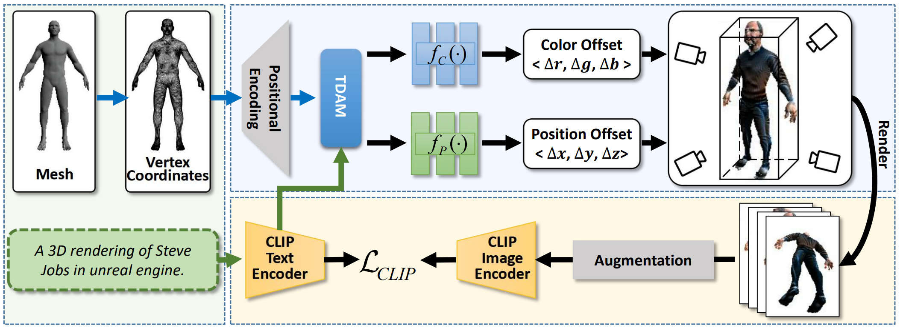
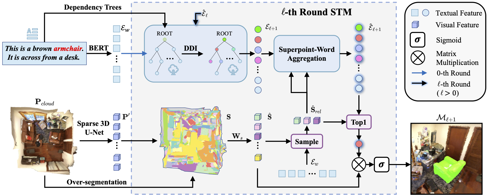
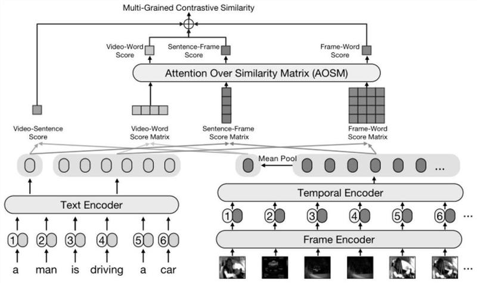
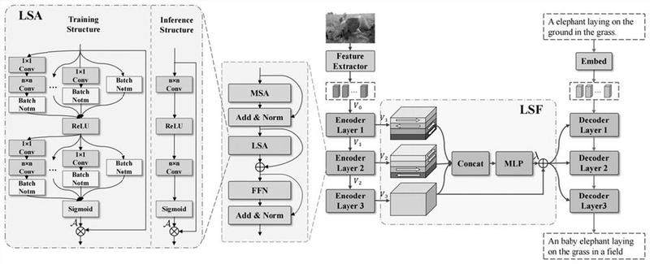
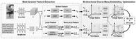

First-year Ph. D Student at Xiamen University |
|
[Biography] [Latest News] [Publications] [Projects] [Major Awards] [Patent] [Professional Activities]
Biography [back top]
I am currently a first-year Ph.D student in Department of Artificial Intelligence, School of Informatics, Xiamen University, advised by Prof. Rongrong Ji and Prof. Xiaoshuai Sun .
My recent research interests are in (2D/3D) vision-and-language learning.
- 09/2023 -- Now: Ph.D. in Intelligence Science and Technology, Xiamen University, Xiamen, China
- 09/2020 -- 06/2023: M.S. in Intelligence Science and Technology, Xiamen University, Xiamen, China
- 12/2021 -- 05/2022: Research Intern, Alibaba DAMO Academy, Hangzhou, China
- 09/2016 -- 06/2020: B.S. in Digital Media Technology, Zhejiang Sci-Tech University, Hangzhou, China
Latest News [back top]
- 07/2023: Three paper accepted by ACM MM
- 07/2023: One paper accepted by ICCV
- 02/2023: One paper accepted by Pattern Recognition (PR)
Publications [back top]
Journal
 |
Yiwei Ma, Jiayi Ji, Xiaoshuai Sun✉, Yiyi Zhou, Rongrong Ji
Towards Local Visual Modeling for Image Captioning Pattern Recognition (PR), 2023 [PDF] [ArXiv] [Code] |
|  | Yinan Li, Yiwei Ma, Yiyi Zhou, Xiao Yu✉,
Semantic-Guided Selective Representation for Image Captioning IEEE Access, 2023 [PDF] |
 |
Jiayi Ji, Yiwei Ma (co-frist author), Xiaoshuai Sun✉, Yiyi Zhou, Yongjian Wu, Rongrong Ji
Knowing What to Learn: A Metric-oriented Focal Mechanism for Image Captioning IEEE Transactions on Image Processing (TIP), 2022 [PDF] [Code] |
 |
Yiwei Ma, Jiayi Ji, Xiaoshuai Sun✉, Yiyi Zhou, Yongjian Wu, Feiyue Huang, Rongrong Ji
Knowing what it is: Semantic-enhanced Dual Attention Transformer IEEE Transactions on Multimedia (TMM), 2022 [PDF] [Code] |
Conference
 |
Yiwei Ma, Jiayi Ji, Xiaoshuai Sun✉, Guannan Jiang, Weilin Zhuang, Rongrong Ji
Beat: Bi-directional One-to-Many Embedding Alignment for Text-based Person Retrieval ACM International Conference on Multimedia (ACM MM), 2023 [PDF Comming] [Code] [Project Page] |
|  | Haowei Wang, Jiji Tang, Jiayi Ji, Xiaoshuai Sun✉, Rongsheng Zhang, Yiwei Ma, Minda Zhao, Lincheng Li, Zeng Zhao, Tangjie Lv, Rongrong Ji
Beyond First Impressions: Integrating Joint Multi-modal Cues for Comprehensive 3D Representation ACM International Conference on Multimedia (ACM MM), 2023 [PDF Comming] [arXiv] [Code] |
|  | Danni Yang, Jiayi Ji, Xiaoshuai Sun✉, Haowei Wang, Yinan Li, Yiwei Ma, Rongrong Ji
Semi-Supervised Panoptic Narrative Grounding ACM International Conference on Multimedia (ACM MM), 2023 [PDF Comming] [Code] |
|  | Yiwei Ma, Xiaoqing Zhang, Xiaoshuai Sun✉, Jiayi Ji, Haowei Wang, Guannan Jiang, Weilin Zhuang, Rongrong Ji
X-Mesh:Towards Fast and Accurate Text-driven 3D Stylization via Dynamic Textual Guidance IEEE International Conference on Computer Vision (ICCV), 2023 [arXiv] [Code] [Project Page] |
 |
Yiwei Ma, Guohai Xu, Xiaoshuai Sun✉, Ming Yan, Ji Zhang, Rongrong Ji
X-CLIP: End-to-End Multi-grained Contrastive Learning for Video-Text Retrieval ACM International Conference on Multimedia (ACM MM), 2022 [PDF] [arXiv] [Code] [Project Page] |
Preprint
|  | Changli Wu, Yiwei Ma, Qi Chen, Haowei Wang, Gen Luo, Jiayi Ji✉, Xiaoshuai Sun
3D-STMN: Dependency-Driven Superpoint-Text Matching Network for End-to-End 3D Referring Expression Segmentation arXiv preprint arXiv:2308.16632 , 2023 [arXiv] [Code] |
Projects [back top]
 |
External-Attention-pytorch Pytorch implementation of various Attention Mechanisms, MLP, Re-parameter, Convolution, which is helpful to further understand papers. [github ] (9300+ stars) |
Patent [back top]
|  |
面向视频文本检索的端到端多粒度对比学习方法 CN115757713A [详情] |
|  |
面向局部视觉建模的图像描述生成方法 CN115964530A [详情] |
|  |
基于文本的人物检索的双向一对多嵌入对齐方法 CN116304145A [详情] |
Major Awards [back top]
- National Scholarship, China, 2022
- Excellent Graduate of of ZheJiang Province, China, 2020
- National Scholarship, China, 2019
- Zhejiang Provincial Government Scholarship, 2018
Professional Activities [back top]
- Conference Reviewer: ACMMM 2023, ICCV 2023